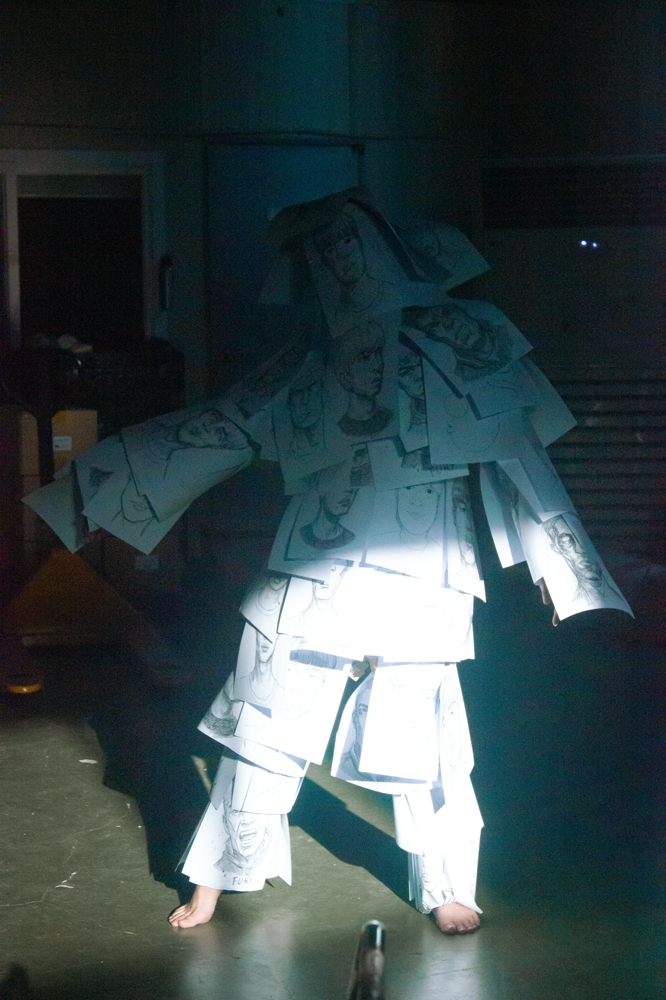
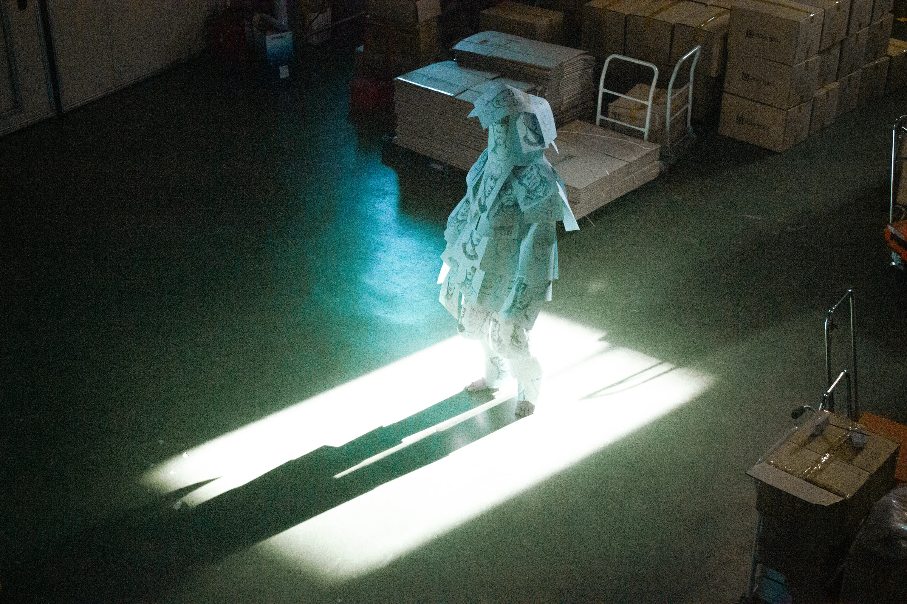
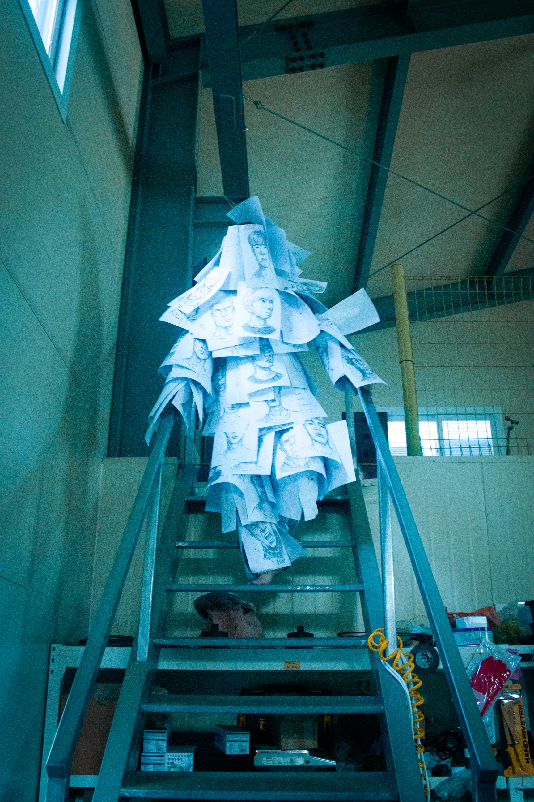
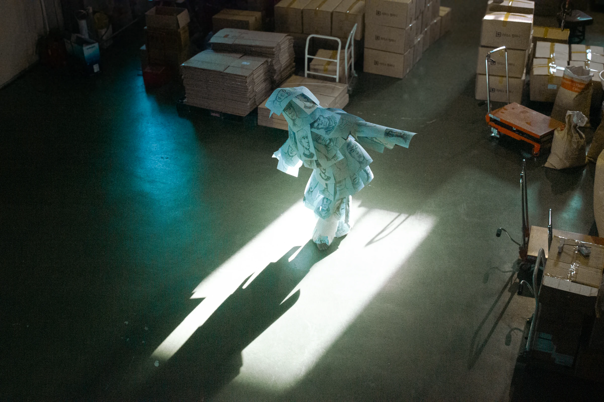
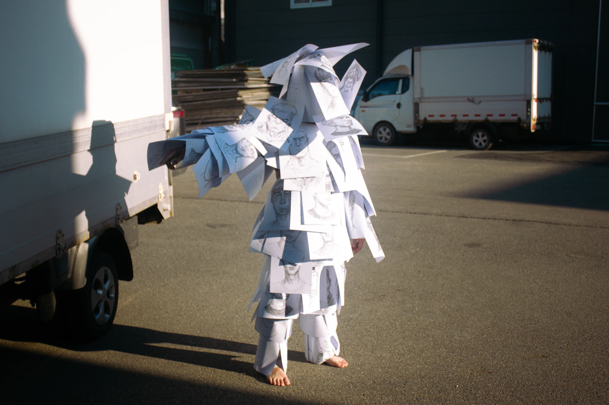
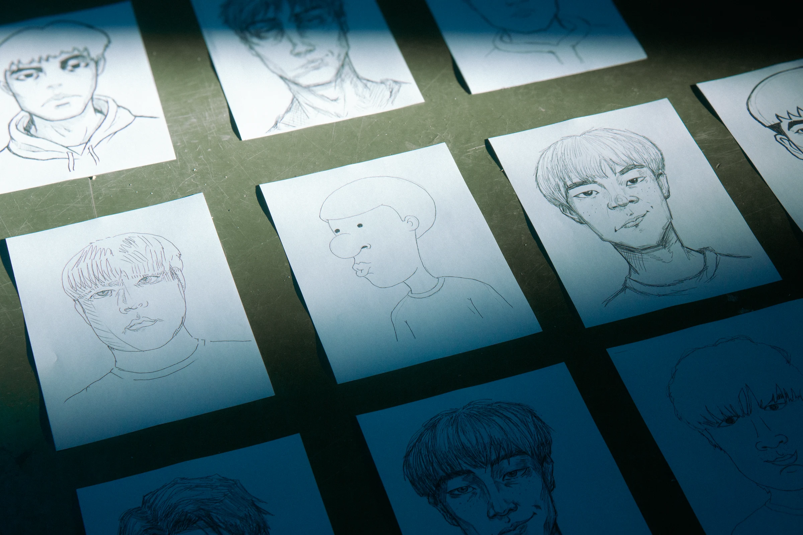
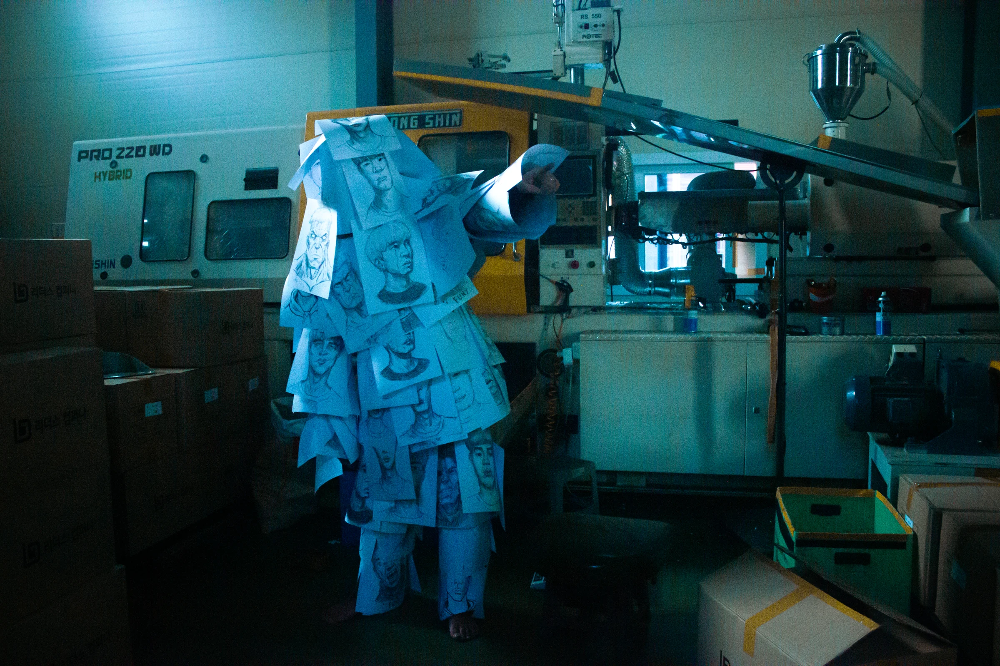
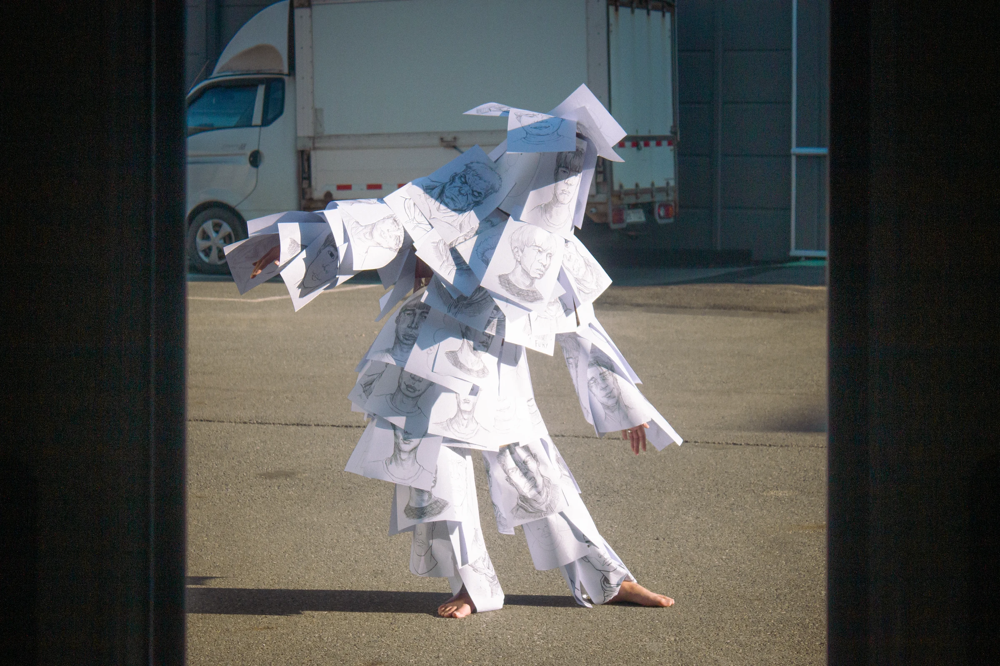
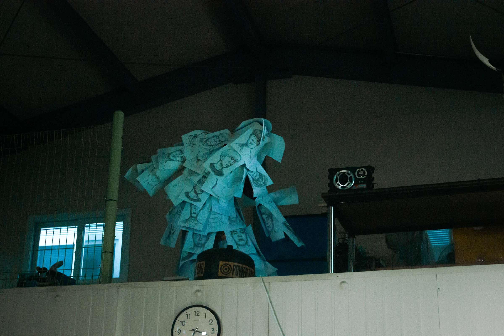
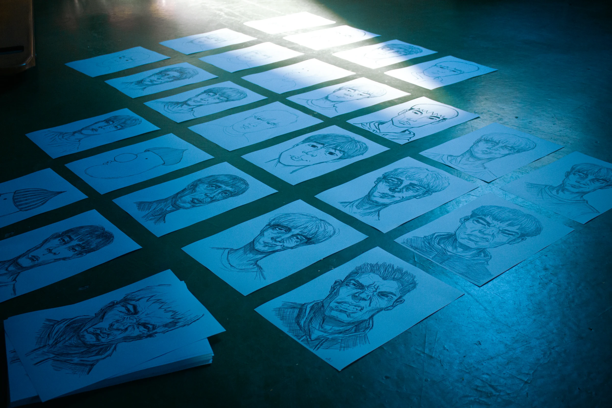

-portrait-
이 얼굴들은 답을 알고 있을까
/
Do These Faces Know the Answer?
2025 /
Performance, Photography, Drawing / Dimensions Variable
하지만 최근 퇴사 후 아버지의 공장에서 50장의 자화상을 그리며,
저는 통제할 수 없는 내면의 해방인 '괴물'을 마주했습니다.
그림 속 50명의 '나'를 뒤집어쓰는 순간, 저는 과거의 꿈과 현재의 방황이 뒤섞인 미지의 존재로 다시 태어납니다.
이 작업은 익숙한 공장이라는 공간에서 사라질지 모를 나를 붙잡고,
진정한 내 인생의 길을 찾아 나서는 가장 개인적이고도 솔직한 여행입니다.
Recently, after leaving my job, I returned to my father's factory and drew 50 self-portraits, reconnecting with my long-forgotten dream of being an artist.
By wearing these 50 different versions of myself, I embrace the "Monster"—the uncontrollable and imperfect inner self. In this familiar space, I transform into an unknown being that blends past memories with present uncertainties.
This performance is a deeply personal journey to find my future path, ensuring that the dreamer within me never disappears.










←